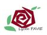

Formation
IUT de Lannion
Diplôme Universitaire Développeur Web
2020 - aujourd'hui
Open Classroom
Tutoriels Java, Python, Lua...
2018 - aujourd'hui
Conservatoire National des Arts et Métiers (CNAM)
Ingénieur en Biologie (non validé)
2012 - 2015
Université Catholique de l'Ouest (UCO) - Guingamp
Lience de biologie, Parcours Biologie Cellulaire et Physiologie
2006-2009
Faculté de Médecine de Brest
Premier Cycle Elémentaire de médecine
2004 - 2006
Lycée Félix LeDantec - Lannion
Bac S option maths, mention AB
2004
Expériences professionnelles
Travaux personnels : développement d'applications mobiles - 2019

Initiation à la programmation et aux PixelArt, développement en autodidacte d'applications mobiles et tactiles, en Lua.
Jeu de la Vie
Space invader
Puissance Cat
Jeu retro
Assistant d'éducation 2012 - 2018
- Accueillir et veiller à la bonne intégration des élèves du lycée.
- Encadrement des élèves sur le temps scolaire, lors des sorties, et en internat, surveillance des devoirs.
- Assurer le lien entre l'équipe pédagogique, les élèves, et les parents d'élèves.
- Connaître et faire respecter le rêglement intérieur.
- Veiller à l'assiduité des élèves, gérer les conflits, maintenir la discipline.
- Secrétaire de jurys de bac, et des éuinion de l'équipe de Vie Scolaire.
- En internat, aide aux devoirs, animation d'activités, rappels des règles de vie en communauté...
Chargé de recherche - Technicien de Laboratoire
2008 - 2009 (5 mois)
Elaboration d'un protocole d'analyse génétique des parasites de la coque Cerastoderma Edule.
+ de détails
2008 (1 mois)
Stage en génie génétique : étude de la conformation de protéines membranaires impliquées dans certaines lymphopathies myéloïdes.
+ de détails
2007 (2 semaines)
Stage analyse biomédicale : réalisation des différentes techniques pratiquées en laboratoire d'analyse médicale : numération et formule sanguine, antibiogramme, ELISA...
Stage analyse biomédicale : réalisation des différentes techniques pratiquées en laboratoire d'analyse médicale : numération et formule sanguine, antibiogramme, ELISA...
Expériences diverses dans le domaine de la santé
Ambulancier, préparateur en pharmacie, agent de service hospitalier...